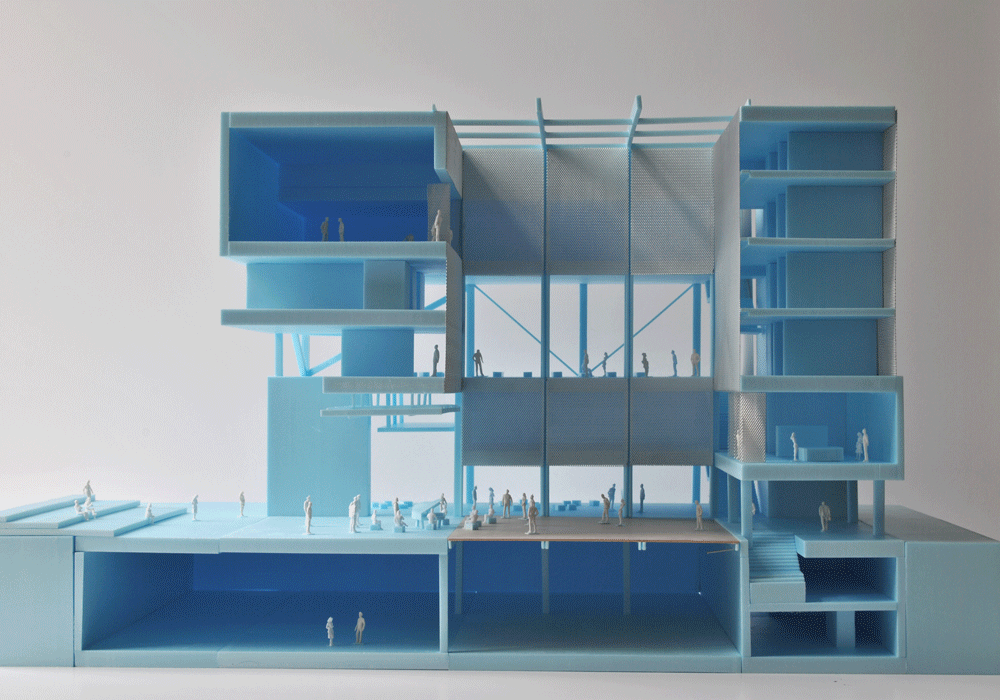

House of Hungarian Music
FORA + Beth Hughes
Competition - Museum - Liget Budapest- 2014
Capitalising on the unique beauty of Budapest's City Park, the museum aims to perform as a true instrument in the park, a new icon for the rich tradition of Hungarian music that is complimentary and sensitive to its pastoral setting. The strategy for the new museum is composed around three principles:
Concentration: the museum is envisioned as a compact form, minimizing its impact between the surrounding trees whilst also allowing for a clear and singular presence.
Context: the massing is broken down into a series of articulated wood volumes interspersed with voids of garden and terrace creating a sensitive scale that delicately responds to the park.
Performance: the building itself is imagined as a spectacle of activities, an apparatus for musical experience and education.
Concept
In our era of new technologies and multi-media the role of the contemporary museum must move beyond the isotropic condition of hermetic and autonomous spaces. The new museum must adopt a far more heterogeneous, changeable and reciprocal character to absorb the new polyvalent educational, research, performance, interactive, production and commercial roles it has acquired.
The building engages with its setting constantly through a series of terraces and the open transparent ground floor that connects to the central chamber. The exterior amphitheatre tucks in under the building connecting to the interior performance space, as if the park is folding in under the building itself. The fine glass perimeter can be folded away to create a vast open air performance space that connects the inside of the building out into the park.
Circulation and Program
The program is clearly distributed around the chamber and over the floors to have 3 distinct circulation routes through the building. Each program can readily be identified and directly accessed by the public/staff/artefacts whilst at the same time allowing visitors to appreciate all the other activities of the building across the central void.
The Chamber
The performance space is centred under a full height void that opens the building up to the sky. All the public spaces are carefully gathered around this impressive atrium. The side walls of all the surrounding spaces are operable and flexible so that they can open up to the centre to vary the conditions and nature of the space depending on the activities below – this ever changing quality serves as a sort of performance of its own, bringing theatre and animation to the building.
The central chamber acts like a diaphragm for the building, expanding and contracting for its varying needs. The floor of the performance space is divided into three moving platforms that can slide up and down the interior of the void to create different configurations, acoustics and engagements with the rest of the building and allowing it to operate differently depending on environmental demands.
This central space also serves as the core of the sustainability strategy, structural logic and technical performance of the building. The perimeter of the Chamber is encased in a structural frame that support the other spaces. The clarity of this structural concept allows for variation in the volumes as they ascend the building creating the modulated volumetric play perceived from the park.


Team:
Architecture: João Moura Fagulha,
Raquel Maria Oliveira, João Prates Ruivo,
Beth Hughes
Sustainability consultant: i+i consulting - Isabel Silvestre, Ignacio Medina.
Renders: Panoptikon -Tudor Vasiliu
Client: The Museum of Fine Arts Budapest and The Városliget Zrt.